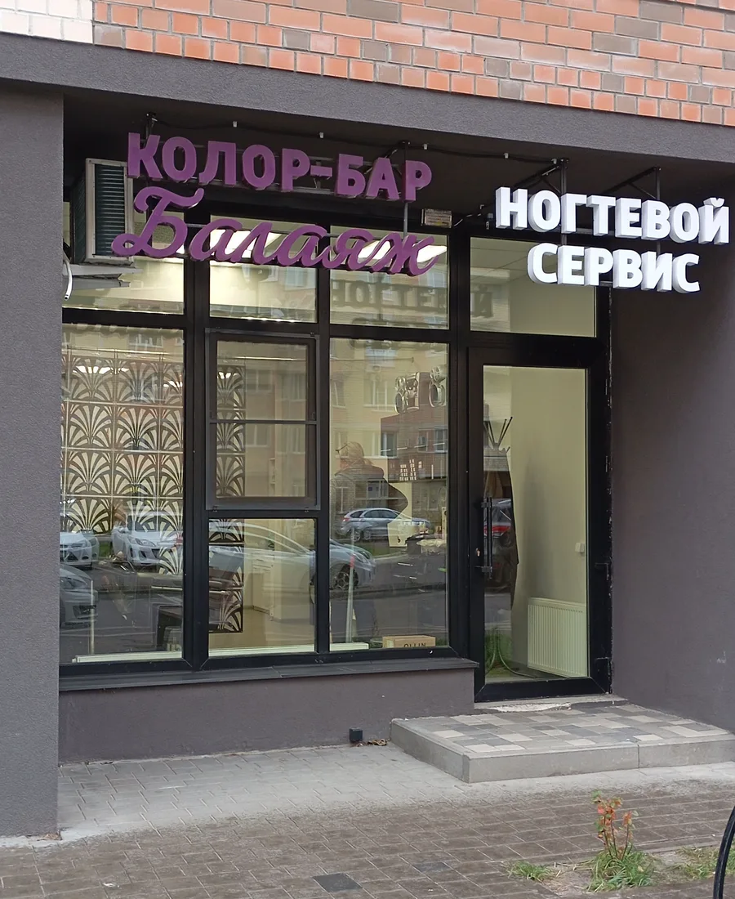

Волосы
- Женская стрижкаот 1 000 ₽
- Мужская стрижкаот 700 ₽
- Сложное окрашивание[цена]
- SPA для головы[цена]
Сложное окрашивание, стрижки, SPA для головы, а ещё маникюр и педикюр в одном месте на Ростовской, 73д. Не знаете, какая техника подойдёт? Ответьте на три вопроса, и сайт подскажет.
Подбор техники
Три вопроса, и сайт покажет технику, которая ближе всего к вашему желанию. Окончательно технику и цену подберёт мастер на консультации.
Какие из этих техник делают мастера колор-бара и сколько это стоит, [впишем с ваших слов].
Услуги
Всё в одном колор-баре: можно совместить окрашивание и маникюр в один визит.
Волосы
Маникюр
Педикюр и подолог
Стрижки и список услуг из карточки колор-бара в 2ГИС. Остальные цены, имена и фото мастеров [впишем ваши].
Запись
Выберите услугу, день и время, оставьте имя и телефон. Колор-бар работает каждый день с 10:00 до 20:00.
Так заявка придёт вам
Новая запись: Анна, консультация и сложное окрашивание, суббота 12:00. Телефон клиентки и кнопка, чтобы сразу ответить в WhatsApp.
Здесь пример. На готовом сайте придёт настоящая заявка.
Занятость в календаре придумана для примера.
День
Время
Откроется бот студии: нажмите «Старт», и накануне придёт напоминание. Колор-бар увидит ваш ник и сможет написать в Telegram. Здесь это демонстрация.
Напоминания включены. Накануне визита придёт сообщение в Telegram.
Как найти
Воронеж, Ростовская улица, 73д к1

Вопросы
Цена сложного окрашивания зависит от длины, густоты и исходного цвета волос, поэтому мастер называет её после консультации. Женская стрижка от 1 000 ₽, мужская от 700 ₽.
Балаяж наносят кистью вертикальными мазками, переход получается мягким и «нарисованным». Шатуш осветляет тонкие пряди хаотично, как будто волосы выгорели на солнце. Подобрать технику можно в блоке «Подбор» выше.
Да. С тёмной базы осветление иногда делают в два визита, чтобы сохранить качество волос. Мастер оценит волосы и подскажет на консультации.
Да, в колор-баре есть ногтевой сервис: аппаратный маникюр, гель-лак, наращивание гелем, мужской и детский маникюр, женский и мужской педикюр, а также подолог.
Ежедневно с 10:00 до 20:00 по предварительной записи.
Воронеж, Ростовская улица, 73д к1, ЖК «Авиатор-2», 1 этаж, Левобережный район. Остановка «Ростовская, 73» примерно в 160 метрах.